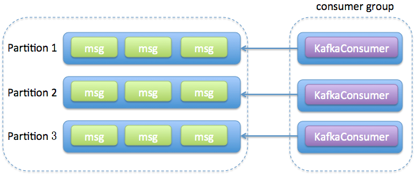
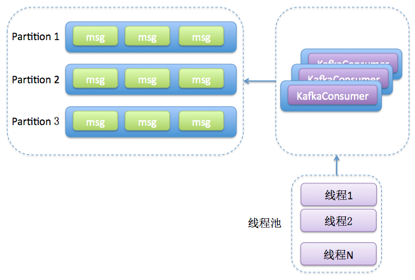
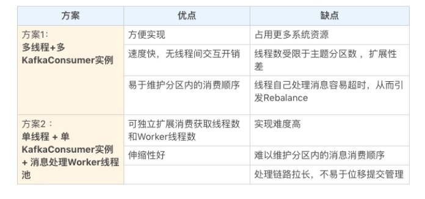

- 00 开篇词 为什么要学习Kafka？.md.html
- 01 消息引擎系统ABC.md.html
- 02 一篇文章带你快速搞定Kafka术语.md.html
- 03 Kafka只是消息引擎系统吗？.md.html
- 04 我应该选择哪种Kafka？.md.html
- 05 聊聊Kafka的版本号.md.html
- 06 Kafka线上集群部署方案怎么做？.md.html
- 07 最最最重要的集群参数配置（上）.md.html
- 08 最最最重要的集群参数配置（下）.md.html
- 09 生产者消息分区机制原理剖析.md.html
- 10 生产者压缩算法面面观.md.html
- 11 无消息丢失配置怎么实现？.md.html
- 12 客户端都有哪些不常见但是很高级的功能？.md.html
- 13 Java生产者是如何管理TCP连接的？.md.html
- 14 幂等生产者和事务生产者是一回事吗？.md.html
- 15 消费者组到底是什么？.md.html
- 16 揭开神秘的“位移主题”面纱.md.html
- 17 消费者组重平衡能避免吗？.md.html
- 18 Kafka中位移提交那些事儿.md.html
- 19 CommitFailedException异常怎么处理？.md.html
- 20 多线程开发消费者实例.md.html
- 21 Java 消费者是如何管理TCP连接的.md.html
- 22 消费者组消费进度监控都怎么实现？.md.html
- 23 Kafka副本机制详解.md.html
- 24 请求是怎么被处理的？.md.html
- 25 消费者组重平衡全流程解析.md.html
- 26 你一定不能错过的Kafka控制器.md.html
- 27 关于高水位和Leader Epoch的讨论.md.html
- 28 主题管理知多少.md.html
- 29 Kafka动态配置了解下？.md.html
- 30 怎么重设消费者组位移？.md.html
- 31 常见工具脚本大汇总.md.html
- 32 KafkaAdminClient：Kafka的运维利器.md.html
- 33 Kafka认证机制用哪家？.md.html
- 34 云环境下的授权该怎么做？.md.html
- 35 跨集群备份解决方案MirrorMaker.md.html
- 36 你应该怎么监控Kafka？.md.html
- 37 主流的Kafka监控框架.md.html
- 38 调优Kafka，你做到了吗？.md.html
- 39 从0搭建基于Kafka的企业级实时日志流处理平台.md.html
- 40 Kafka Streams与其他流处理平台的差异在哪里？.md.html
- 41 Kafka Streams DSL开发实例.md.html
- 42 Kafka Streams在金融领域的应用.md.html
- 加餐 搭建开发环境、阅读源码方法、经典学习资料大揭秘.md.html
- 结束语 以梦为马，莫负韶华！.md.html
20 多线程开发消费者实例
你好，我是胡夕。今天我们来聊聊 Kafka Java Consumer 端多线程消费的实现方案。
目前，计算机的硬件条件已经大大改善，即使是在普通的笔记本电脑上，多核都已经是标配了，更不用说专业的服务器了。如果跑在强劲服务器机器上的应用程序依然是单线程架构，那实在是有点暴殄天物了。不过，Kafka Java Consumer 就是单线程的设计，你是不是感到很惊讶。所以，探究它的多线程消费方案，就显得非常必要了。
Kafka Java Consumer 设计原理
在开始探究之前，我先简单阐述下 Kafka Java Consumer 为什么采用单线程的设计。了解了这一点，对我们后面制定多线程方案大有裨益。
谈到 Java Consumer API，最重要的当属它的入口类 KafkaConsumer 了。我们说 KafkaConsumer 是单线程的设计，严格来说这是不准确的。因为，从 Kafka 0.10.1.0 版本开始，KafkaConsumer 就变为了双线程的设计，即用户主线程和心跳线程。
所谓用户主线程，就是你启动 Consumer 应用程序 main 方法的那个线程，而新引入的心跳线程（Heartbeat Thread）只负责定期给对应的 Broker 机器发送心跳请求，以标识消费者应用的存活性（liveness）。引入这个心跳线程还有一个目的，那就是期望它能将心跳频率与主线程调用 KafkaConsumer.poll 方法的频率分开，从而解耦真实的消息处理逻辑与消费者组成员存活性管理。
不过，虽然有心跳线程，但实际的消息获取逻辑依然是在用户主线程中完成的。因此，在消费消息的这个层面上，我们依然可以安全地认为 KafkaConsumer 是单线程的设计。
其实，在社区推出 Java Consumer API 之前，Kafka 中存在着一组统称为 Scala Consumer 的 API。这组 API，或者说这个 Consumer，也被称为老版本 Consumer，目前在新版的 Kafka 代码中已经被完全移除了。
我之所以重提旧事，是想告诉你，老版本 Consumer 是多线程的架构，每个 Consumer 实例在内部为所有订阅的主题分区创建对应的消息获取线程，也称 Fetcher 线程。老版本 Consumer 同时也是阻塞式的（blocking），Consumer 实例启动后，内部会创建很多阻塞式的消息获取迭代器。但在很多场景下，Consumer 端是有非阻塞需求的，比如在流处理应用中执行过滤（filter）、连接（join）、分组（group by）等操作时就不能是阻塞式的。基于这个原因，社区为新版本 Consumer 设计了单线程 + 轮询的机制。这种设计能够较好地实现非阻塞式的消息获取。
除此之外，单线程的设计能够简化 Consumer 端的设计。Consumer 获取到消息后，处理消息的逻辑是否采用多线程，完全由你决定。这样，你就拥有了把消息处理的多线程管理策略从 Consumer 端代码中剥离的权利。
另外，不论使用哪种编程语言，单线程的设计都比较容易实现。相反，并不是所有的编程语言都能够很好地支持多线程。从这一点上来说，单线程设计的 Consumer 更容易移植到其他语言上。毕竟，Kafka 社区想要打造上下游生态的话，肯定是希望出现越来越多的客户端的。
多线程方案
了解了单线程的设计原理之后，我们来具体分析一下 KafkaConsumer 这个类的使用方法，以及如何推演出对应的多线程方案。
首先，我们要明确的是，KafkaConsumer 类不是线程安全的 (thread-safe)。所有的网络 I/O 处理都是发生在用户主线程中，因此，你在使用过程中必须要确保线程安全。简单来说，就是你不能在多个线程中共享同一个 KafkaConsumer 实例，否则程序会抛出 ConcurrentModificationException 异常。
当然了，这也不是绝对的。KafkaConsumer 中有个方法是例外的，它就是wakeup()，你可以在其他线程中安全地调用**KafkaConsumer.wakeup()**来唤醒 Consumer。
鉴于 KafkaConsumer 不是线程安全的事实，我们能够制定两套多线程方案。
- 消费者程序启动多个线程，每个线程维护专属的 KafkaConsumer 实例，负责完整的消息获取、消息处理流程。如下图所示：

- 消费者程序使用单或多线程获取消息，同时创建多个消费线程执行消息处理逻辑。获取消息的线程可以是一个，也可以是多个，每个线程维护专属的 KafkaConsumer 实例，处理消息则交由特定的线程池来做，从而实现消息获取与消息处理的真正解耦。具体架构如下图所示：

总体来说，这两种方案都会创建多个线程，这些线程都会参与到消息的消费过程中，但各自的思路是不一样的。
我们来打个比方。比如一个完整的消费者应用程序要做的事情是 1、2、3、4、5，那么方案 1 的思路是粗粒度化的工作划分，也就是说方案 1 会创建多个线程，每个线程完整地执行 1、2、3、4、5，以实现并行处理的目标，它不会进一步分割具体的子任务；而方案 2 则更细粒度化，它会将 1、2 分割出来，用单线程（也可以是多线程）来做，对于 3、4、5，则用另外的多个线程来做。
这两种方案孰优孰劣呢？应该说是各有千秋。我总结了一下这两种方案的优缺点，我们先来看看下面这张表格。

接下来，我来具体解释一下表格中的内容。
我们先看方案 1，它的优势有 3 点。
- 实现起来简单，因为它比较符合目前我们使用 Consumer API 的习惯。我们在写代码的时候，使用多个线程并在每个线程中创建专属的 KafkaConsumer 实例就可以了。
- 多个线程之间彼此没有任何交互，省去了很多保障线程安全方面的开销。
- 由于每个线程使用专属的 KafkaConsumer 实例来执行消息获取和消息处理逻辑，因此，Kafka 主题中的每个分区都能保证只被一个线程处理，这样就很容易实现分区内的消息消费顺序。这对在乎事件先后顺序的应用场景来说，是非常重要的优势。
说完了方案 1 的优势，我们来看看这个方案的不足之处。
- 每个线程都维护自己的 KafkaConsumer 实例，必然会占用更多的系统资源，比如内存、TCP 连接等。在资源紧张的系统环境中，方案 1 的这个劣势会表现得更加明显。
- 这个方案能使用的线程数受限于 Consumer 订阅主题的总分区数。我们知道，在一个消费者组中，每个订阅分区都只能被组内的一个消费者实例所消费。假设一个消费者组订阅了 100 个分区，那么方案 1 最多只能扩展到 100 个线程，多余的线程无法分配到任何分区，只会白白消耗系统资源。当然了，这种扩展性方面的局限可以被多机架构所缓解。除了在一台机器上启用 100 个线程消费数据，我们也可以选择在 100 台机器上分别创建 1 个线程，效果是一样的。因此，如果你的机器资源很丰富，这个劣势就不足为虑了。
- 每个线程完整地执行消息获取和消息处理逻辑。一旦消息处理逻辑很重，造成消息处理速度慢，就很容易出现不必要的 Rebalance，从而引发整个消费者组的消费停滞。这个劣势你一定要注意。我们之前讨论过如何避免 Rebalance，如果你不记得的话，可以回到专栏第 17 讲复习一下。
下面我们来说说方案 2。
与方案 1 的粗粒度不同，方案 2 将任务切分成了消息获取和消息处理两个部分，分别由不同的线程处理它们。比起方案 1，方案 2 的最大优势就在于它的高伸缩性，就是说我们可以独立地调节消息获取的线程数，以及消息处理的线程数，而不必考虑两者之间是否相互影响。如果你的消费获取速度慢，那么增加消费获取的线程数即可；如果是消息的处理速度慢，那么增加 Worker 线程池线程数即可。
不过，这种架构也有它的缺陷。
- 它的实现难度要比方案 1 大得多，毕竟它有两组线程，你需要分别管理它们。
- 因为该方案将消息获取和消息处理分开了，也就是说获取某条消息的线程不是处理该消息的线程，因此无法保证分区内的消费顺序。举个例子，比如在某个分区中，消息 1 在消息 2 之前被保存，那么 Consumer 获取消息的顺序必然是消息 1 在前，消息 2 在后，但是，后面的 Worker 线程却有可能先处理消息 2，再处理消息 1，这就破坏了消息在分区中的顺序。还是那句话，如果你在意 Kafka 中消息的先后顺序，方案 2 的这个劣势是致命的。
- 方案 2 引入了多组线程，使得整个消息消费链路被拉长，最终导致正确位移提交会变得异常困难，结果就是可能会出现消息的重复消费。如果你在意这一点，那么我不推荐你使用方案 2。
实现代码示例
讲了这么多纯理论的东西，接下来，我们来看看实际的实现代码大概是什么样子。毕竟，就像 Linus 说的：“Talk is cheap, show me the code!”
我先跟你分享一段方案 1 的主体代码：
public class KafkaConsumerRunner implements Runnable {
private final AtomicBoolean closed = new AtomicBoolean(false);
private final KafkaConsumer consumer;
public void run() {
try {
consumer.subscribe(Arrays.asList("topic"));
while (!closed.get()) {
ConsumerRecords records =
consumer.poll(Duration.ofMillis(10000));
// 执行消息处理逻辑
}
} catch (WakeupException e) {
// Ignore exception if closing
if (!closed.get()) throw e;
} finally {
consumer.close();
}
}
// Shutdown hook which can be called from a separate thread
public void shutdown() {
closed.set(true);
consumer.wakeup();
}
这段代码创建了一个 Runnable 类，表示执行消费获取和消费处理的逻辑。每个 KafkaConsumerRunner 类都会创建一个专属的 KafkaConsumer 实例。在实际应用中，你可以创建多个 KafkaConsumerRunner 实例，并依次执行启动它们，以实现方案 1 的多线程架构。
对于方案 2 来说，核心的代码是这样的：
private final KafkaConsumer<String, String> consumer;
private ExecutorService executors;
...
private int workerNum = ...;
executors = new ThreadPoolExecutor(
workerNum, workerNum, 0L, TimeUnit.MILLISECONDS,
new ArrayBlockingQueue<>(1000),
new ThreadPoolExecutor.CallerRunsPolicy());
...
while (true) {
ConsumerRecords<String, String> records =
consumer.poll(Duration.ofSeconds(1));
for (final ConsumerRecord record : records) {
executors.submit(new Worker(record));
}
}
..
这段代码最重要的地方是我标为橙色的那个语句：当 Consumer 的 poll 方法返回消息后，由专门的线程池来负责处理具体的消息。调用 poll 方法的主线程不负责消息处理逻辑，这样就实现了方案 2 的多线程架构。
小结
总结一下，今天我跟你分享了 Kafka Java Consumer 多线程消费的实现方案。我给出了比较通用的两种方案，并介绍了它们各自的优缺点以及代码示例。我希望你能根据这些内容，结合你的实际业务场景，实现适合你自己的多线程架构，真正做到举一反三、融会贯通，彻底掌握多线程消费的精髓，从而在日后实现更宏大的系统。